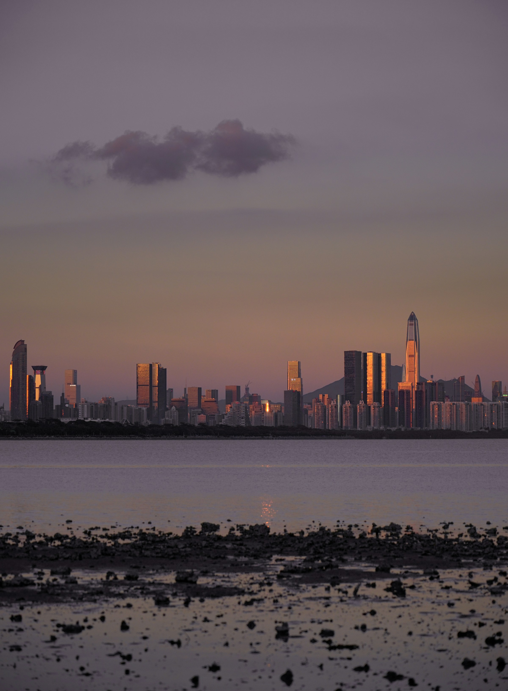

Health checkups
A coordinated checkup visit, with registration, language support and a plan for receiving your reports.
IntersectionMed · Short-visit coordination
Make room for a planned healthcare visit in your China journey. We help with appointments, English-Chinese interpretation and local accompaniment.
Checkups · Basic dental care · Digestive appointments
English-Chinese support
Public and private options
Dates and scope confirmed individually
Your starting point
Three core visit types
A coordinated checkup visit, with registration, language support and a plan for receiving your reports.
Dental assessment and, where the dentist confirms suitability, cleaning or simple fillings. Further care is planned separately.
Appointment and preparation communication for provider-assessed gastroscopy or colonoscopy, with accompaniment and report handover.
An optional consultation or initial assessment with a qualified provider, not a promise to complete treatment during a short stay.
Planning around one or two appointments? Ask us to check feasibility with the provider. Reports, further visits and treatment may take longer.
The support around the appointment
From checking the campus address to communicating at registration, small details matter when the system and language are unfamiliar.

The destination
Beside Hong Kong, with an international airport and a waterfront city to explore. Plan the appointment first, then build your stay around the provider's instructions.
Discover ShenzhenHow it works
Tell us the visit type, dates and language needs. Undecided dates are welcome.
Review appointment options, coordination support and separately charged medical or travel services.
Understand scope and feesCheck the appointment, provider requirements, support timing and report handover before fixing travel.
Read the planning processSome checkups, consultations or basic dental visits may fit this pattern after the provider confirms. It is not a guarantee: further tests, pathology, treatment or follow-up can require more time.
No. Share your preferred dates or an approximate window. Confirm the appointment, preparation, report timing and any travel restrictions with the provider before fixing travel.
We can discuss the appointment you are considering, language and accompaniment needs, possible support scope and coordination fees. Hospital charges and travel costs are confirmed separately.
IntersectionMed is not a hospital or healthcare provider and does not provide medical diagnosis, treatment, or medical advice. Medical decisions are made solely by licensed physicians and healthcare institutions.
Start with your questions
Tell us your dates, the appointment you are considering and the support you need. Discuss scope and coordination fees before confirming arrangements.
Usually within 1-2 business days. No detailed medical records needed for an initial inquiry.